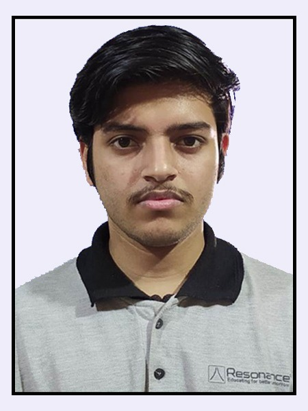

Contact: example@gmail.com
LinkedIn: linkedin.com/gulshankumar
GitHub: github.com/gulshankumar
|  | I am a passionate software engineer with expertise in problem solving and computational thinking. I love to explore various technology and framework to develop efficient and scalable solutions. I am in a journey to master the MERN Stack Web development. I am constantly expanding my skills and staying up-to-date with the latest advancements in the field of software development. |
14 Oct 2023- Nov 24 2023
Zaraa Mushkura:- A Website made by using HTML, CSS For E&Y Hackathon
Remote Well:- An app made by FlutterFlow for NIT Surathkal Hackathon
I Am A First Year Student In NIE Mysore
I Am Still In Learning Phase And Haven't For Any Company Yet (December 17 2024)
I Started Learning HTML & CSS And During That Process I Have Worked On Few 3 To 4 Projects Till This Date (December 14)
I Am Available In LinkedIn And You Can Connect To Me There